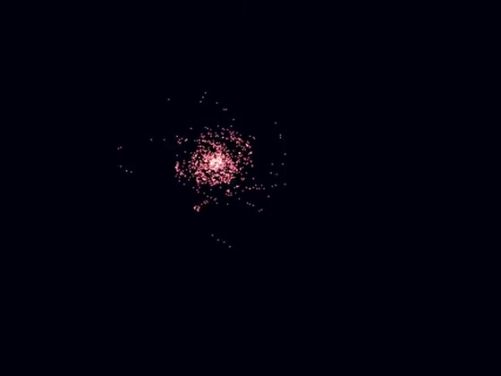

Hi! I am Akshat Singh Jaswal.
I love my computer.
- Code on GitHub.
- Over on Twitter as @akshat_sj.
- Or if you prefer LinkedIn.
- Papers on Google Scholar.
- Reach out to me at sja.akshat@gmail.com.
Papers
Projects
-
 pathbyter
C++
A Monte-Carlo path tracer in C++ with no external libraries.
pathbyter
C++
A Monte-Carlo path tracer in C++ with no external libraries.

-
whisker Asm · C A hobby 32-bit operating system and bootloader, x86 from scratch.
-

galaxysim C++ · OpenGL An N-body particle simulation in C++ with OpenGL — sequential and Barnes-Hut.